سیستم طراحی رولوانا
ساخته از دو صفحهی پذیرفتهشده: خانه (دور ۶۳) و صفحهی فیلم و سریال (دور ۵۸). این برگه همان فایلهای CSS را میخواند که آن دو صفحه با آن ساخته شدهاند، و هر جزء اینجا همان نشانهگذاری است که روی صفحه رندر میشود؛ پس جزء روی برگه همان جزء روی صفحه است.
فایلها
هر صفحهی تازه اول توکنها، بعد پایه، بعد خانوادهی اجزای خودش را میخواند. جزء تازه اول به این فایلها اضافه میشود، بعد در صفحه به کار میرود.
| فایل | لایه | چه کسی میخواند |
|---|---|---|
rollvana-tokens.css | توکنها: فونت، رنگ، جوهر، لایههای جوهر، شیشه، گردی، اندازهی متن، حرکت | همهی صفحهها، اول از همه |
rollvana-base.css | پایهی مشترک خانه و صفحهی عنوان: ریست، آیکن، عدد چرخان، سرصفحه، منو، شیت، تببار، … | همهی صفحهها، بعد از توکنها |
rollvana-catalog.css | اجزای خانه: اسلایدر، سرِ ردیف، کارت فیلم و قسمت، ادامهی تماشا، بنر فیلمبازها، ژورنال، سرصفحهی شیشهای | خانه و هر صفحهی فهرستی (آرشیو، جستجو) |
rollvana-motion.js | حرکت با Framer Motion: منحنیها، فنرها و الگوهای آماده (RVM)؛ هیچ keyframes و transition در CSS جای آن را نمیگیرد | همهی صفحهها، بعد از framer-motion و htm و پیش از اسکریپت صفحه |
rollvana-archive.css | اجزای آرشیو: سرِ صفحه با شمارش، دکمهی ابزار، منوی ترتیب، کنترل بخشبخش (نما، امتیاز، دوبله، زیرنویس)، ردیف ژانر، تراشهی فیلتر اعمالشده، کارت آرشیو و ردیف فهرست، صفحهبندی، پیام صفحهی خارج از محدوده، شیت فیلتر با تراشهی چندانتخابی و بازهی سال، حالت خالی | آرشیو فیلم و سریال؛ بعد از rollvana-catalog.css |
rollvana-search.css | اجزای جستجو: کادر جستجو با نماد ذرهبین که چرخنده میشود و دکمهی پاک کردن، خط راهنما، خط شمارش با جستجوی تکرارشده، خط «چرا این نتیجه» (نزدیکترین املا، فینگلیش)، نشان نوع فیلم / سریال، خط نام اصلی در ردیف، میانبرها با دستهی سه پوستر، پنل باز شدن با شناسهی IMDb و خط پیشرفت، نام درخواست زیر حالت بینتیجه | جستجو؛ بعد از rollvana-archive.css (ردیف فهرست، شیت فیلتر، تراشهها، دکمهی ابزار و حالت خالی از آنجاست) |
rollvana-title.css | اجزای صفحهی فیلم و سریال: کاور، امتیازها، فصلها، قسمتها، دانلود، نظرها، مشابهها | صفحهی فیلم و سریال و صفحههای جزئیات |
legacy/ | نسخهی قبلی که از این دو صفحه دور شده بود | فقط ورود و پخشکننده، تا بازطراحی روی همین سیستم (آرشیو از ZIP-400 و جستجو از ZIP-401 روی همین سیستماند) |
رنگها
نسبت ۷۰-۲۰-۱۰: شب برای زمین، سطح بنفش برای کارتها، بنفش فقط برای اقدام اصلی، زبانهی فعال و برند. رنگ از معنا میآید (R1، R2). نسبتها اندازهگیری شدهاند، روی شب ۰ مگر جایی که گفته شده.
شب ۰
جوهر ۱ روی آن ۱۷٫۸:۱
--night-0 #07060Cزمین صفحهجوهر ۱ روی آن ۱۷٫۸:۱
شب ۱
جوهر ۳ روی آن ۴٫۸:۱
--night-1 #0D0B15سطحجوهر ۳ روی آن ۴٫۸:۱
سطح بنفش
جوهر ۱ روی آن ۱۶٫۳:۱
--surf #151026کارتها و جعبهها (۲۰٪)جوهر ۱ روی آن ۱۶٫۳:۱
جوهر ۱
۱۷٫۸:۱ روی شب ۰
--ink-1 #F2EFF8متن اصلی۱۷٫۸:۱ روی شب ۰
جوهر ۲
۹٫۲:۱
--ink-2 ۷۲٪متن دوم۹٫۲:۱
جوهر ۳
۴٫۸:۱
--ink-3 ۵۰٪متن آرام، برچسب۴٫۸:۱
بنفش
۷٫۵:۱ روی شب ۰
--v #A98BFFاقدام اصلی، زبانهی فعال، برند (حداکثر ۱۰٪)۷٫۵:۱ روی شب ۰
بنفش روشن
۱۱٫۳:۱ روی شب ۱
--light-hi #CDBBFFمتن و آیکن روشن۱۱٫۳:۱ روی شب ۱
کاغذ
متن --on-paper روی آن ۱۷٫۰:۱
--paper #F4F1FAپرِ سفید دکمهی پخش در صفحهی عنوانمتن --on-paper روی آن ۱۷٫۰:۱
طلایی
۱۲٫۴:۱
--gold #F5C451همسلیقگی، «تازه» روی کارت سریال۱۲٫۴:۱
ستارهی IMDb
۱۲٫۴:۱
--c-imdb #F5C518ستارهی امتیاز روی کارت۱۲٫۴:۱
خوب / میانه / بد
۱۱٫۶ / ۱۳٫۲ / ۷٫۳ :۱
--c-good #4ADE80رأی و رضایت مخاطب؛ همراه --c-mid #FACC15 و --c-bad #F87171۱۱٫۶ / ۱۳٫۲ / ۷٫۳ :۱
Rotten Tomatoes
۵٫۳:۱
--c-rt #FA320Aنشان خودش، فقط کنار عدد۵٫۳:۱
Metacritic
۹٫۹:۱
--c-mc #66CC33نشان خودش، فقط کنار عدد۹٫۹:۱
رنگ عنوان
هرگز پرِ سطح بزرگ
--acc از پوسترفقط نشانههای کوچک در صفحهی عنوان (R3)هرگز پرِ سطح بزرگ
لایههای جوهر
سطحها، خطها و پرها همه از جوهر ۱ با شفافیت ساخته میشوند: --fill-NNN یعنی جوهر ۱ با شفافیت NNN از هزار. خطها --line-1 و --line-2.
020030035040050060070080100120140160180220300شیشه
| دستور | مقدار | کجا |
|---|---|---|
--glass-fx | blur(20px) saturate(0) contrast(.3) brightness(.4) | «ورود» و «خرید اشتراک» روی تصویر: پشتِ دکمه خنثی میشود تا رنگش روی هر اسلاید یکی بماند (R6) |
--glass-n / --glass-n-hover | --fill-140 / --fill-220 | پرِ شیشهی خنثی، و حالت هاور |
--glass-edge | --fill-300 | لبهی ۱ پیکسلی داخلی هر شیشه و فیلد روی تصویر (C10) |
| شیشهی بنفش | rgba(150,118,255,.44) با لبهی rgba(205,187,255,.55) | فقط «خرید اشتراک» |
| قاعده | — | شیشه یعنی «میشود فشارش داد» (C1). نوع، دسته و وضعیت هرگز شیشه نیستند. |
تایپوگرافی
IRANYekanX برای همه چیز (R5)؛ Instrument Serif فقط سرتیتر ژورنال. وزنها ۵۰۰ / ۶۰۰ / ۷۰۰ / ۸۰۰. اندازهها توکن --fs-* اند؛ اینها نقشهای اصلیاند.
--fs-11-5۱۱٫۵ برچسب ریز، نشان دوبله--fs-12-5۱۲٫۵ سال · ژانر روی کارت (موبایل)--fs-13۱۳ متن کمکی، لینک ردیف--fs-13-5۱۳٫۵ ژانر روی کارت (دسکتاپ)--fs-14-5۱۴٫۵ ناوبری سرصفحه--fs-15Dune: Part Two — نام کارت (موبایل)--fs-16-5Dune: Part Two — نام کارت (دسکتاپ)--fs-18۱۸ سرِ ردیف (زیر ۴۲۰)--fs-22۲۲ سرِ ردیف (دسکتاپ)--fs-28۲۸ سرِ فصل صفحهی عنوان--fs-44۴۴ عنوان کاور--fs-64Rollvana Journalگردی
دایره برای آواتار و دکمهی گرد، قرص برای کنترلها؛ بقیه از این پلهها.
--r-4--r-6--r-8--r-10--r-12--r-14--r-16--r-18--r-20--r-24--r-pillحرکت
همهی حرکتها با Framer Motion ساخته میشوند، از فایل rollvana-motion.js. هر تغییر دگرگونی همان چیز است، نه جایگزینی؛ نوع حرکت از نوع مقدار میآید (C15). محو ساده پیشفرض نیست.
| توکن | کجا | مقدار |
|---|---|---|
EASE | ورود و نشستن: نرم بیرون میآید | [0.22,1,0.36,1] |
EASE_IN | خروج متن و کلمه | [0.64,0,0.78,0] |
EASE_LEAVE | خروج تصویر و رقم | [0.4,0,1,1] |
EASE_STAGE | خروج پسزمینهی اسلاید | [0.4,0,0.2,1]، ۰٫۷ ثانیه |
SPR | جابهجایی کنترلها و نشانگرها | فنر ۳۸۰ / ۳۲ |
SOFT | جای کلمهها در فهرست ژانر (layout) | فنر ۲۶۰ / ۳۴ / جرم ۰٫۹ |
SNAP | کلید و انتخاب کوچک | فنر ۵۲۰ / ۳۴ / جرم ۰٫۴۵ |
MARK | قاب بندانگشتی فعال (layoutId) | فنر ۴۲۰ / ۳۶ |
PANEL / SHEET | پنل و شیت که بالا میآیند | فنر ۳۰۰ / ۳۴ و ۳۰۰ / ۳۰ |
TALLY | شمردن عدد (Count) | فنر ۱۲۰ / ۲۰ / جرم ۰٫۸ |
DIGIT | غلتیدن رقم با کمی overshoot | فنر ۰٫۴۵ ثانیه، bounce ۰٫۲۸ |
PRESS | فشار دکمه (whileTap) | scale ۰٫۹۴ |
| الگو | چه چیزی چطور تغییر میکند | مقدار |
|---|---|---|
Count | کمیت میشمارد تا مقدار تازه | TALLY؛ با کاهش حرکت مستقیم |
AnimChars / Slot | زمان و امتیاز: فقط رقم عوضشده میغلتد | DIGIT برای y، EASE برای محو و تاری ۸px؛ خروج ۰٫۶ زمان با EASE_LEAVE |
Flip | گام (فصل، قسمت) میغلتد | ۰٫۳۸ ثانیه، EASE |
Words | متن خواندنی کلمه به کلمه در جای خودش حل میشود، نه حرف به حرف | هر کلمه ۰٫۵ ثانیه، فاصلهی ۰٫۰۳۵ |
GenreMorph | کلمههای مشترک فهرست سر جایشان میمانند | SOFT برای layout |
Fade | بلوک محتوا با جابهجایی ۸px و تاری مینشیند (محو ساده نیست) | ۰٫۶ ثانیه ورود، ۰٫۳۲ خروج |
Cross | تصویر فقط cross-fade | ۰٫۴۵ ثانیه |
Runtime | وقتی نوع مقدار عوض شود (مدت ↔ تعداد قسمت) فقط حل میشود؛ عدد درونش میشمارد | ۰٫۳ ثانیه |
ITEM / stagger() | ورود پشتسرهم اجزای اطلاعات | ۰٫۴۲ ثانیه، فاصلهی ۰٫۰۴۵ خانه و ۰٫۰۷ عنوان |
Fill | نوار پیشرفت اسلاید خطی پر میشود (زمان معنای آن است) | ۶ ثانیه، با مکث صفر میشود؛ کاهش حرکت: پر |
Drift | Ken Burns آرام تصویر اسلاید | scale ۱ → ۱٫۰۶ در ۹ ثانیه؛ کاهش حرکت: ثابت |
.sk | درخشش اسکلت با Motion.animate | ۱٫۴ ثانیه، تکرار؛ کاهش حرکت: ثابت |
accent() | رنگ عنوان --acc از رنگ قبلی به رنگ تازه میرود، نه جایگزینی | ACCENT: ۱٫۱ ثانیه، EASE_STAGE؛ کاهش حرکت ۰٫۱۵ |
| کاهش حرکت | جابهجایی و تاری حذف، فقط محو کوتاه ۰٫۱ تا ۰٫۲ ثانیه | useReducedMotion |
حالت (STATE) | کجا | مقدار |
|---|---|---|
tap | رنگ لینک کوچک، محو صفحهی آغاز در کاهش حرکت | ۰٫۱۵ ثانیه، EASE |
ink | رنگ و زمینهی hover دکمهها، لینکها و ردیف منو | ۰٫۲ ثانیه، EASE |
fill | زمینهی کنترلها، حلقهی دور کارت، رنگ زبانه | ۰٫۲۵ ثانیه، EASE |
swing | چرخش فلش «بیشتر»، حلقهی بندانگشتی | ۰٫۳ ثانیه، EASE |
glide | زمینهی دکمهی اصلی، لبهی کارت ژانر، پهنای نشانگر اسلاید | ۰٫۳۲ ثانیه، EASE |
tint | تیره شدن پوشش کارت | ۰٫۳۵ ثانیه، EASE |
reveal | روشن شدن تصویر بندانگشتی | ۰٫۴ ثانیه، EASE |
grow | باز شدن پهنای جستجو و بندانگشتی، باز شدن خلاصهی کارت | ۰٫۴۵ ثانیه، EASE |
settle | تاری محتوای پنهان، بزرگ شدن تصویر، رفتن صفحهی آغاز | ۰٫۵ ثانیه، EASE |
slow | بزرگ شدن تصویر قسمت | ۰٫۶ ثانیه، EASE |
tide | رنگ هالهی پشت ردیفها | ۱٫۴ ثانیه، EASE |
hold | visibility تا پایان بلندترین حرکت همان جزء نگه داشته میشود | گسسته |
hover، فوکوس، فشار و تغییر کلاس با stateMotion() در rollvana-motion.js حرکت میکنند. CSS فقط میگوید چه چیزی با کدام توکن حرکت کند: --motion: background ink, color ink. در CSS هیچ transition نیست؛ Framer Motion مقدار قبلی را به مقدار تازه میبرد، وسط راه قابل قطع است و از همان نقطه برمیگردد. فشار دکمهها whileTap با PRESS یا SPR است. با کاهش حرکت فقط شفافیت در ۰٫۱۵ ثانیه حرکت میکند و بقیه مستقیم مینشیند.
نشانگر را روی این دکمهها ببرید: زمینه و رنگ با توکن خودشان تغییر میکنند.
اجزای خانه
از صفحهی خانه، در حالت واردشده مگر جایی که گفته شده. هاور روی کارتها روی همین برگه کار میکند.
سرصفحه روی اسلایدر (مهمان)
.hdr .hl .login .sub · .hero .copy .strip2 .thشیشهی خنثی و بنفش روی تصویر، انتخابگر همهی اسلایدها بی اسکرول، حلقه و نوار پیشرفت داخل بندانگشتی (R6، R21، R33، R34)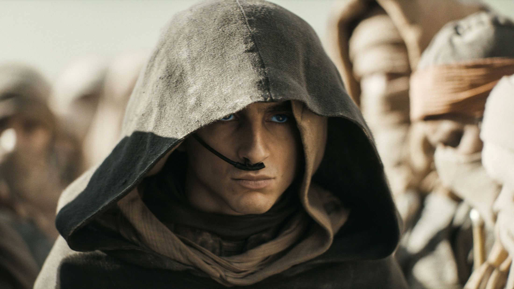
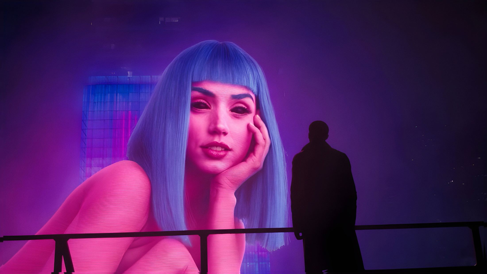
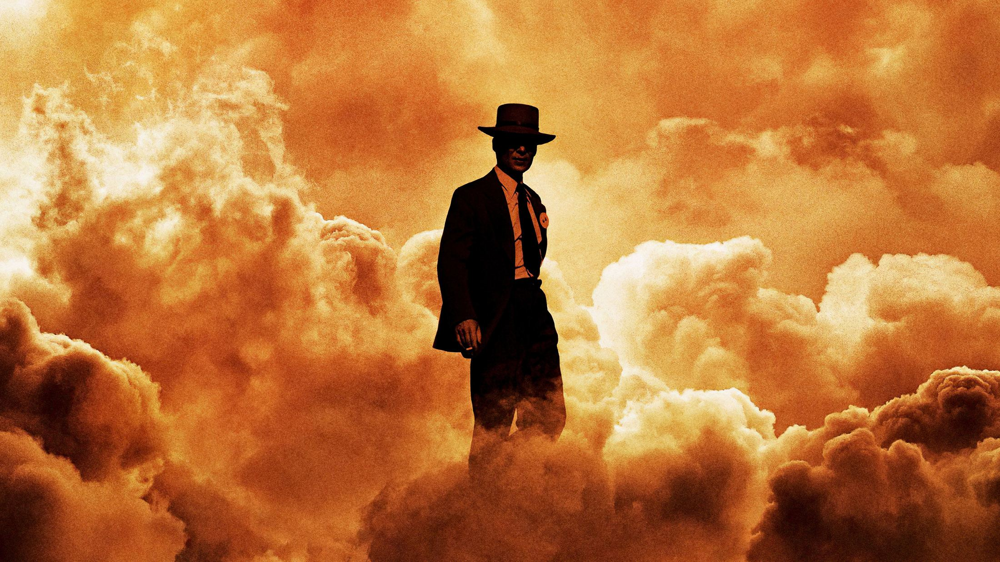
فیلمعلمیتخیلی، ماجراجویی
تلماسه: بخش دوم
پل آتریدیز در کنار چانی و فرمنها به جنگ خاندانی میرود که خانوادهاش را نابود کرد؛ و میان عشق و سرنوشت کهکشان باید یکی را انتخاب کند.
سرصفحه (واردشده)
.hdrاعلان و حساب کاربری کنار «خرید اشتراک»ردیف ادامهی تماشا
.row.cont .rh .cw .cwpاول ردیفها، پیشرفت داخل کارت (C7، C14، R17)ردیف پیشنهاد
.row.big .card .cmatchخط طلایی همسلیقگی بالای نام (R11)، فقط واردشده (R18)پیشنهاد برای شما
همهی پیشنهادها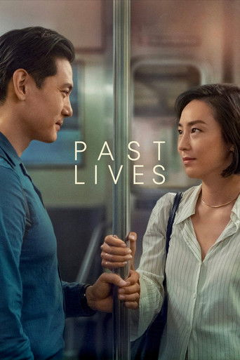
۹۷٪ همسلیقه با شما
Past Lives
۲۰۲۳عاشقانه، درام
دو دوست کودکی پس از بیست سال در نیویورک دوباره هم را میبینند و از «اگر»های زندگیشان میپرسند.
دوبله7.9/10
۹۵٪ همسلیقه با شما
Arrival
۲۰۱۶علمیتخیلی، درام
زبانشناسی مأمور میشود با موجوداتی فضایی حرف بزند و در این راه، نگاهش به زمان دگرگون میشود.
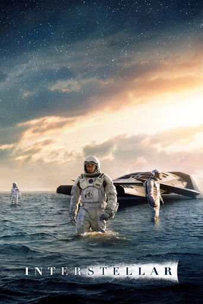
۹۴٪ همسلیقه با شما
Interstellar
۲۰۱۴علمیتخیلی، ماجراجویی
گروهی از فضانوردان از کرمچالهای میگذرند تا خانهی تازهای برای بشریت پیدا کنند.
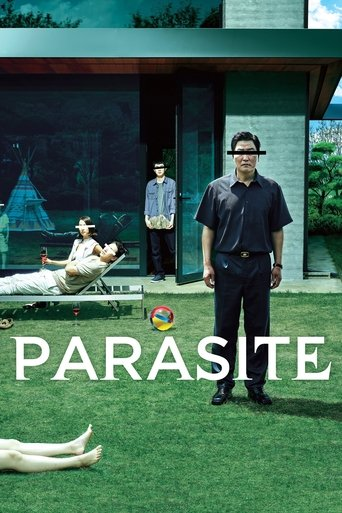
۹۲٪ همسلیقه با شما
Parasite
۲۰۱۹هیجانانگیز، کمدی
خانوادهای فقیر یکییکی به خانهی خانوادهای ثروتمند راه پیدا میکنند، تا وقتی که رازی زیر خانه پیدا میشود.

۹۱٪ همسلیقه با شما
Whiplash
۲۰۱۴درام، موسیقی
درامری جوان زیر دست استادی بیرحم، مرز میان نبوغ و ویرانی را میآزماید.
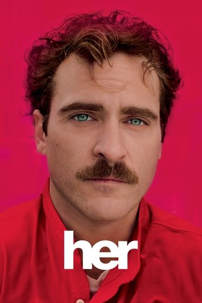
۸۹٪ همسلیقه با شما
Her
۲۰۱۳عاشقانه، علمیتخیلی
مردی تنها در آیندهای نزدیک، عاشق سیستمعاملی هوشمند میشود که هر روز بیشتر از او میفهمد.
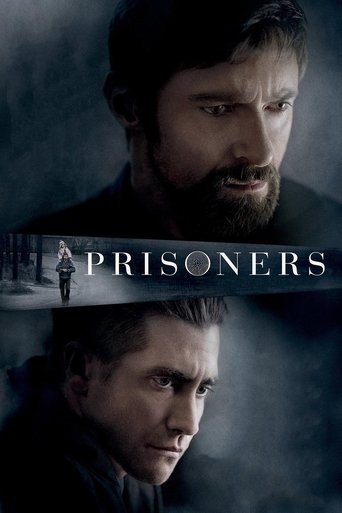
۸۸٪ همسلیقه با شما
Prisoners
۲۰۱۳جنایی، معمایی
وقتی دختر کوچکش ناپدید میشود و پلیس به جایی نمیرسد، پدری تصمیم میگیرد خودش قانون را در دست بگیرد.
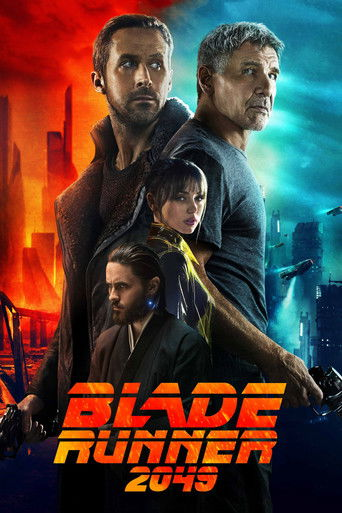
۸۶٪ همسلیقه با شما
Blade Runner 2049
۲۰۱۷علمیتخیلی، معمایی
شکارچی تازهای رازی را کشف میکند که میتواند باقیماندهی جامعه را به آشوب بکشد.
بنر فیلمبازها
.lvb .lvc .lvart .lvctaیک کارت تمامعرض، یک دکمهی شیشهای (R36)سرِ ردیف و کارت فیلم
.rh .rhi .more · .card .sbox .bdg .ct .cg .csynستاره و ۸٫۵/۱۰ بی جعبه، نشان دوبله/زیرنویس، نام انگلیسی کامل، سال · ژانر، خلاصه با هاور (R9–R16، R19، R39)فیلمهای تازه
آرشیو فیلمها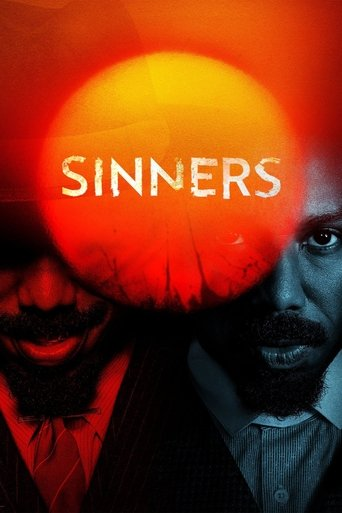
Sinners
۲۰۲۵ترسناک، درام
دو برادر دوقلو به شهر زادگاهشان برمیگردند تا از نو شروع کنند، اما شری کهنهتر از گذشتهشان منتظرشان است.
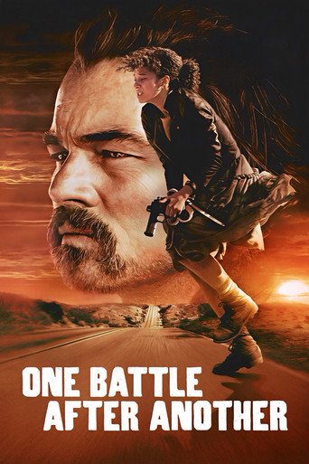
One Battle After Another
۲۰۲۵اکشن، درام
انقلابیِ بازنشستهای وقتی دخترش ناپدید میشود، ناچار است با دشمنان قدیمیاش دوباره روبهرو شود.
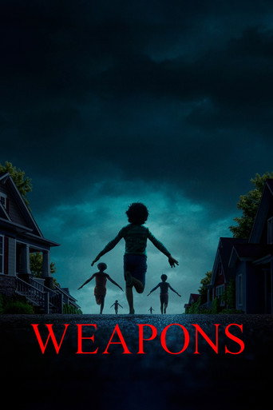
Weapons
۲۰۲۵ترسناک، معمایی
یک شب، همهی بچههای یک کلاس جز یکی، در یک ساعت از خانه بیرون میروند و دیگر برنمیگردند.

F1
۲۰۲۵ورزشی، درام
رانندهی کهنهکار فرمول یک برمیگردد تا همتیمی جوانش را به قهرمانی برساند و حساب خودش را با گذشته صاف کند.
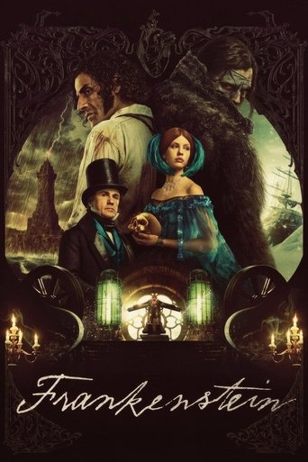
Frankenstein
۲۰۲۵فانتزی، درام
دانشمندی جاهطلب به مرده جان میدهد و آفریدهاش، تنها و خشمگین، پاسخ همهچیز را از او میخواهد.

Mission: Impossible – The Final Reckoning
۲۰۲۵اکشن، ماجراجویی
ایتن هانت و تیمش در مسابقهای با زمان، باید جلوی هوش مصنوعیای را بگیرند که دنیا را تهدید میکند.
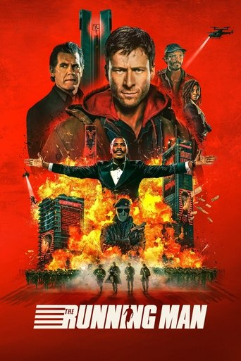
The Running Man
۲۰۲۵اکشن، علمیتخیلی
مردی بیپول در یک مسابقهی تلویزیونی شرکت میکند که در آن شکارچیان برای کشتنش آزادند.
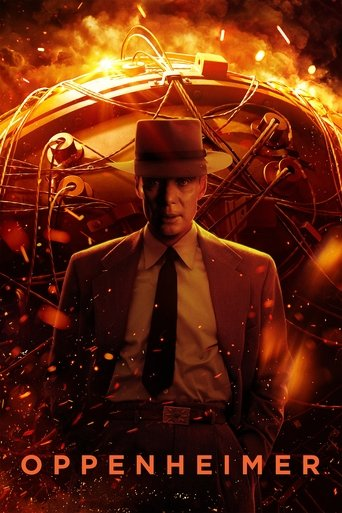
Oppenheimer
۲۰۲۳زندگینامه، درام
داستان دانشمندی که بمب اتم را ساخت، و بهایی که برای آن پرداخت.
کارت قسمت
.card.wide .cep۱۶:۱۰، سایهی بلند چندمرحلهای (R37)قسمتهای تازه
آرشیو سریالها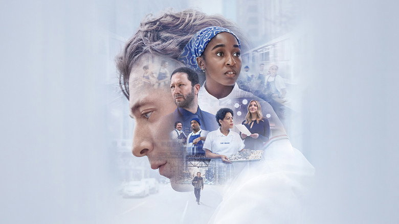
The Bear
فصل ۴ · قسمت ۲
۲۰۲۲کمدی، درام
آشپزی برجسته به ساندویچفروشی خانوادگیاش در شیکاگو برمیگردد تا آن را از ورشکستگی نجات دهد.
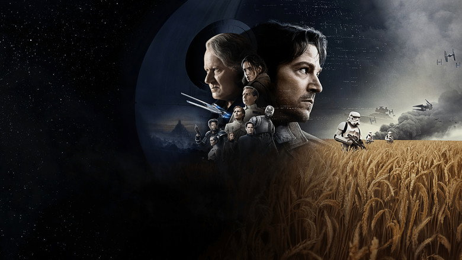
Andor
فصل ۲ · قسمت ۱۲
۲۰۲۲علمیتخیلی، ماجراجویی
کاسیان آندور از دزدی بیهدف به یکی از چهرههای اصلی شورش علیه امپراتوری تبدیل میشود.
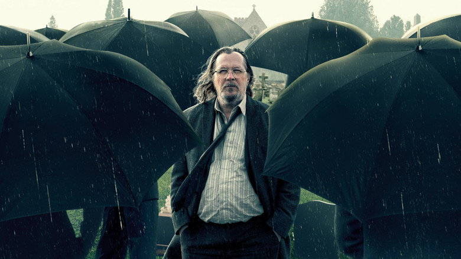
Slow Horses
فصل ۵ · قسمت ۶
۲۰۲۲جنایی، هیجانانگیز
گروهی از مأموران اخراجیِ سازمان اطلاعات بریتانیا، بیآنکه کسی جدیشان بگیرد، درگیر پروندههای واقعی میشوند.
دوبله8.6/10
The Penguin
فصل ۱ · قسمت ۸
۲۰۲۴جنایی، درام
اسوالد کابلپات در خلأ قدرت گاتهام، پلهپله به سوی تاجوتخت دنیای تبهکاری بالا میرود.
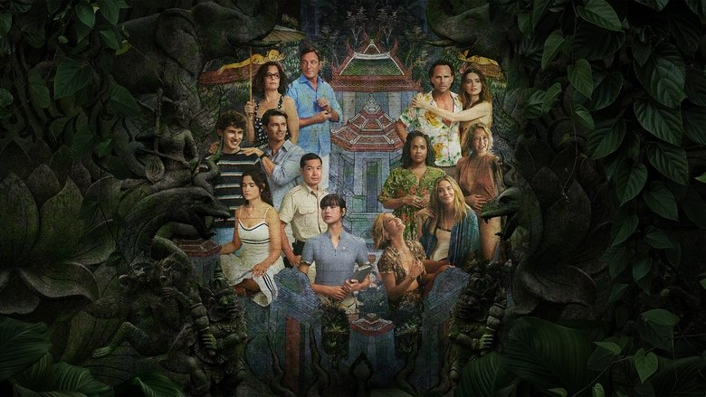
The White Lotus
فصل ۳ · قسمت ۸
۲۰۲۱کمدی، درام
تعطیلات چند مهمان ثروتمند در یک هتل لوکس، هفتهبههفته به سمت یک مرگ مرموز پیش میرود.
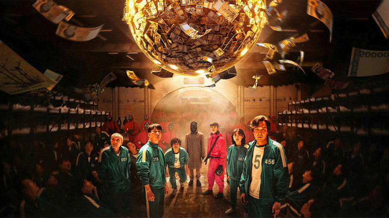
Squid Game
فصل ۳ · قسمت ۶
۲۰۲۱هیجانانگیز، درام
صدها بدهکار در بازیهای کودکانهای شرکت میکنند که جایزهاش ثروت است و باختش مرگ.
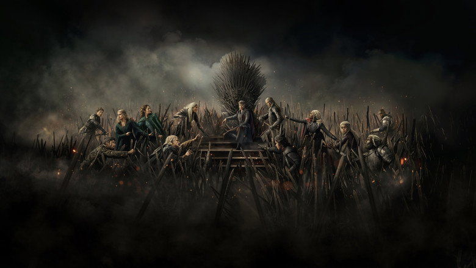
House of the Dragon
فصل ۲ · قسمت ۸
۲۰۲۲فانتزی، درام
دویست سال پیش از «بازی تاج و تخت»، جنگ جانشینی خاندان تارگرین را از درون میشکافد.
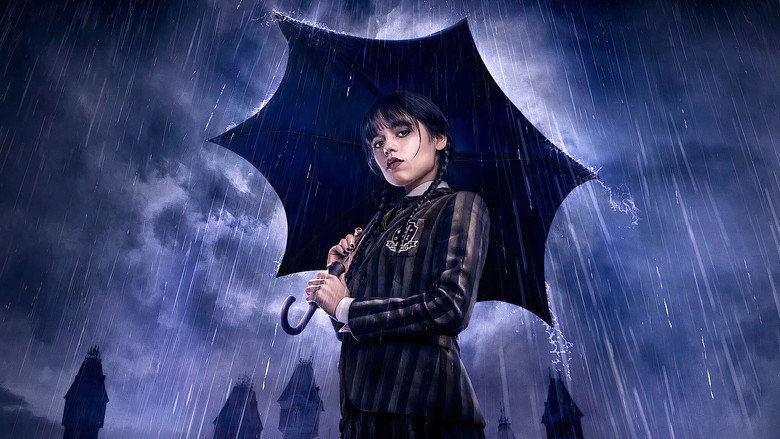
Wednesday
فصل ۲ · قسمت ۸
۲۰۲۲کمدی، فانتزی
ونزدی آدامز در مدرسهی شبانهروزی نورمور، رازی را دنبال میکند که به گذشتهی خانوادهاش گره خورده است.
باند Rollvana Journal
.mag .magt .rjc .nwسطح جدا با سرتیتر سریف (C5، R20)مجلهی رولواناRollvana Journalنقد، خبر و هرچه پشت پردهی فیلمها میگذرد
نقد و بررسی
آرشیو نقدها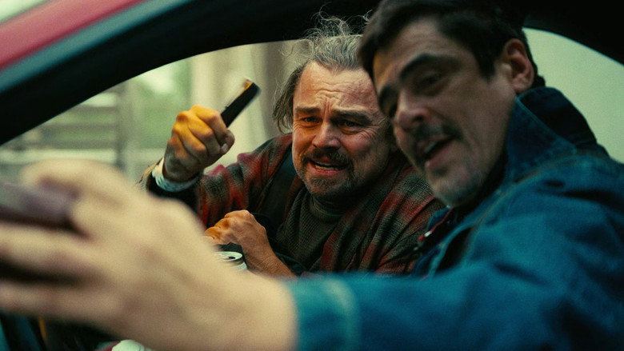
«نبردی پس از نبرد دیگر»: پل توماس اندرسون در اوجاندرسون با کمدی سیاه و تعقیبی بیوقفه، شخصیترین و پرانرژیترین فیلمش را ساخته است.
تتحریریهی رولوانا۷ دقیقه مطالعه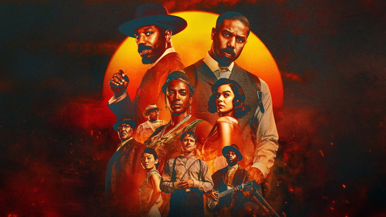
«گناهکاران»؛ ترسناکی که موسیقیاش را فراموش نمیکنیدکوگلر ژانر خونآشامی را با بلوز جنوب آمریکا گره میزند؛ ترسناکی که بیشتر از هر چیز شنیدنی است.
ممریم ک.۵ دقیقه مطالعه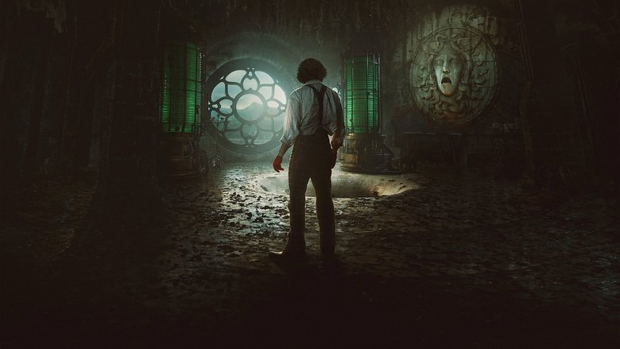
فرانکنشتاینِ دل تورو: هیولا یا قربانی؟دل تورو هیولا را مهربانترین آدم داستان میکند و سازنده را هیولای واقعی.
آآرش م.۶ دقیقه مطالعه«پنگوئن» بهترین سریال کمیکبوکی این سالهاست؟کالین فارل زیر گریم ناپدید میشود و گاتهام هیچوقت اینقدر واقعی نبوده است.
تتحریریهی رولوانا۸ دقیقه مطالعهاخبار
آرشیو اخباردر حال بارگذاری
.skاسکلت هماندازهی کارتها، درخشش ۱٫۴ ثانیهادامهی تماشا
تاریخچهپیشنهاد برای شما
فیلمهای تازه
قسمتهای تازه
عنوانهای بلند
.card .ctنام هرگز کوتاه نمیشود (C13)فیلمهای تازه
آرشیو فیلمهاMission: Impossible – The Final Reckoning of Ethan Hunt
۲۰۲۵اکشن، ماجراجویی
ایتن هانت و تیمش در مسابقهای با زمان، باید جلوی هوش مصنوعیای را بگیرند که دنیا را تهدید میکند.
دوبله7.6/10
Sinners
۲۰۲۵ترسناک، درام
دو برادر دوقلو به شهر زادگاهشان برمیگردند تا از نو شروع کنند، اما شری کهنهتر از گذشتهشان منتظرشان است.
زیرنویس8.1/10
One Battle After Another
۲۰۲۵اکشن، درام
انقلابیِ بازنشستهای وقتی دخترش ناپدید میشود، ناچار است با دشمنان قدیمیاش دوباره روبهرو شود.
دوبله7.5/10
Weapons
۲۰۲۵ترسناک، معمایی
یک شب، همهی بچههای یک کلاس جز یکی، در یک ساعت از خانه بیرون میروند و دیگر برنمیگردند.
F1
۲۰۲۵ورزشی، درام
رانندهی کهنهکار فرمول یک برمیگردد تا همتیمی جوانش را به قهرمانی برساند و حساب خودش را با گذشته صاف کند.
زیرنویس7.5/10
Frankenstein
۲۰۲۵فانتزی، درام
دانشمندی جاهطلب به مرده جان میدهد و آفریدهاش، تنها و خشمگین، پاسخ همهچیز را از او میخواهد.
زیرنویس6.6/10
The Running Man
۲۰۲۵اکشن، علمیتخیلی
مردی بیپول در یک مسابقهی تلویزیونی شرکت میکند که در آن شکارچیان برای کشتنش آزادند.
دوبله8.3/10
Oppenheimer
۲۰۲۳زندگینامه، درام
داستان دانشمندی که بمب اتم را ساخت، و بهایی که برای آن پرداخت.
نوار زبانه (موبایل)
.tabs .tab .markشناور، زیر ۱۰۲۴ پیکسل؛ زبانهی فعال بنفشنوار زبانه فقط زیر ۱۰۲۴ پیکسل دیده میشود؛ برگه را باریک کنید.
آرشیو
صفحهی آرشیو فیلم و سریال، خودش و در حالتهایش؛ قابها همان صفحه را با همین فایلهای CSS باز میکنند (rollvana-archive.css روی rollvana-catalog.css). بنفش فقط برای صفحهی فعلی، دکمهی اعمال فیلتر، اقدام حالت خالی، پر شدن بازهی سال و فوکوس. انتخاب ژانر جوهر سفید است، نه بنفش.
| جزء | کلاس | حرکت |
|---|---|---|
| شمارش و صفحه | .am .pgx | شمار میشمارد (TALLY)، شمارهی صفحه فقط رقمهای عوضشده را میچرخاند (DIGIT) |
| دکمهی ابزار | .tb .tb .n | فشار PRESS؛ شمار فیلترها رقمش میچرخد |
| منوی ترتیب | .tsort .menu | از گوشهی خودش باز میشود (۰٫۲ ثانیه EASE)، برچسب کلمهبهکلمه حل میشود |
| کنترل بخشبخش | .sgc .sgc.vt | دستگیره میلغزد (SNAP، از 21st.dev Segmented Control 23552) |
| ردیف ژانر | .gr .gc .gc-on | پرشدگی انتخاب از تراشهای به تراشهی دیگر میرود (MARK، layoutId) |
| تراشهی فیلتر اعمالشده | .acs .ac .acx | تراشهی حذفشده جمع میشود و بقیه جا باز میکنند (SOFT) |
| کارت آرشیو و ردیف فهرست | .card.arc .lr .lpw .nop | تغییر نما: پوستر شکل عوض میکند (SOFT layout)، متن در جای خود حل میشود؛ نتیجهی تازه: ماندنیها سر جا میمانند، تازهها بالا میآیند، رفتنیها کوچک و محو میشوند |
| صفحهبندی | .pg .pgn .pgs .pge .pg-on | نشان صفحهی فعلی به شمارهی تازه میرود (MARK)، شمارهها جابهجا میلغزند (SOFT) |
| شیت فیلتر | .sheet.fsheet .fsh .fsec .fc .rng .fsh-f | شیت با فنر SHEET بالا میآید (دسکتاپ: پنل کناری با PANEL)، تیک تراشه کشیده میشود، عدد دکمهی اعمال میشمارد |
| پیام و خالی | .nt .emp | حالت خالی نشست میکند (۸ پیکسل و محو شدن تاری) |
?s=first?s=list?s=sort?s=filter?s=applied?s=empty?s=loading?s=oorجستجو
صفحهی جستجو، خودش و در حالتهایش؛ قابها همان صفحه را با همین فایلهای CSS باز میکنند (rollvana-search.css روی rollvana-archive.css). مهمترین چیز جستجوی کاربر و عنوانهایی است که پیدا میشوند. بنفش فقط برای هاله و نشانگر متن کادر در فوکوس، اقدام «درخواست این عنوان»، خط پیشرفت باز شدن با شناسهی IMDb، دکمهی اعمال فیلتر و زبانهی فعال.
| جزء | کلاس | حرکت |
|---|---|---|
| کادر جستجو | .sfw .sf .sf-g .sf-sp .sf-x | نماد ذرهبین تا وقتی درخواست میرود به چرخنده تبدیل میشود (چرخش و مقیاس با SNAP، چرخنده ۰٫۸ ثانیه خطی؛ از 21st.dev Spinner Input Group 29824)؛ دکمهی پاک کردن با SNAP از مقیاس ۰٫۵ میآید |
| خط راهنما | .sf-h | متن کلمهبهکلمه در جای خودش حل میشود (Words) |
| خط شمارش | .srb .am .q .am .of | شمار میشمارد (TALLY)، جستجوی تکرارشده در جای خودش حل میشود (۰٫۳ ثانیه، تاری ۴px) |
| چرا این نتیجه | .sr-why | همراه خط شمارش مینشیند |
| نشان نوع و نام اصلی | .kd .lb .lo | ندارد؛ عوض نمیشود |
| ردیف نتیجه | .lr (آرشیو) | فهرست به فهرست: ماندنیها سر جا میلغزند، تازهها از تاری بالا میآیند با فاصلهی ۰٫۰۴، رفتنیها کوچک و محو میشوند (از 21st.dev Search Empty State 29989) |
| میانبرها | .cuts .cut .cut-s .cut-b | پشتسرهم با ۸px و تاری مینشینند؛ وقتی نتیجه میآید حل میشوند (نوع عوض شده) |
| باز شدن با شناسهی IMDb | .go .go-p .go-t .go-f .go-l | خط پیشرفت ۷۰۰ میلیثانیه خطی پر میشود (Fill؛ زمان معنای آن است، از 21st.dev Progress 26542)، بعد صفحهی عنوان باز میشود |
| بینتیجه | .emp (آرشیو) .emp .q .emp .rqn | مینشیند (۸px و تاری)؛ اقدام بنفش «درخواست این عنوان» |
?s=empty?s=one?s=loading?s=fa?s=typo?s=fg?s=mixed?s=applied?s=adv?s=none?s=idok?s=idnone?s=long